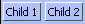
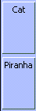
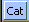

The Box System
[Table of Contents] [Previous: Checkbox (Tri-State)] [Next: Broadcasters and Observers]
Feature Owner: Eric
Vaughan
[This spec is my own interpretation of how boxes work. If I'm wrong about anything, please bring it to my attention. You may have discovered a bug in boxes, or I may have misinterpreted something. - Dave]
The Basics
The box is a special kind of container used primarily for laying out controls within dialogs and windows. Boxes lay out their children using a constraint-based system in which both relative sizing and intrinsic sizing of controls are supported. Boxes are ideal for a layout in which the size of the controls could change (e.g., because of localization changes or skin changes).
The box is specified using the box tag. Boxes come in two flavors: the horizontal box and the vertical box. The horizontal box lays out its children horizontally (left to right), and the vertical box stacks its children vertically (top to bottom).
The align attribute can be used to dictate whether or not the box is horizontal or vertical. If the align attribute is omitted, the box is assumed to be horizontal.
<box align="horizontal">
<titledbutton value="Child 1"/>
<titledbutton value="Child 2"/>
</box>
 |
When items are placed in a box without specifying any additional information about their size, then the box will flow the children intrinsically. In other words, the box will ask each child how big its needs to be, and then it will make the child that size. Notice that in the above example, the two buttons are only as big as they need to be to display all of their text.
Widths can be specified for items inside a horizontal box. When an object specifies its width in pixels or in ems, it is telling the box that it would like to be that width. Percentage widths are meaningless inside a horizontal box. Similarly, heights can be specified for items in a vertical box. The component is indicating its preferred height. Percentage heights are likewise meaningless inside a vertical box.
It is generally the case that specifying percentage widths or heights on children of a box (regardless of its alignment) is meaningless and should be avoided. [In fact, it currently appears that such a specification can cause problems, so make sure that if you're using boxes, you don't use percentage widths and heights on the direct children of the box.]
<box>
<titledbutton style="width: 200px" value="Child 1"/>
<titledbutton style="width: 100px" value="Child 2"/>
</box>
|

In the above example, the first child is twice as wide as the second child, since it asked to be 200 pixels wide. The second child asked to be only 100 pixels wide.
Flex
Objects in boxes fall into two categories: flexible and inflexible. Inflexible objects will not grow, even when there is extra space left over in the box.
<box style="width: 400px;">
<titledbutton style="width: 200px" value="Child 1"/>
<titledbutton style="width: 100px" value="Child 2"/>
</box>
|
By default all objects in a horizontal box are the same height, that of the tallest child in the box. In a vertical box, by default, all objects are the same width, that of the widest child in the box.
<box align="vertical">
<titledbutton value="Cat"/>
<titledbutton value="Piranha"/>
<titledbutton value="Antidisestablishmentarianism"/>
</box>
|

An object becomes flexible when the flex attribute is placed on the element. Objects that are flexible can shrink or grow as the box shrinks and grows. Whenever there is extra space left over in a box, the flexible objects are expanded to fill that space. Flex is specified as a numerical value. All flex is relative. For example, a child with a flex of 2 is twice as flexible as a child with a flex of 1.
Let's take a look at what happens with flexible objects when there is extra space left over.
<box align="vertical" style="height: 200px">
<titledbutton value="Cat"/>
<titledbutton flex="1" value="Piranha"/>
<titledbutton value="Antidisestablishmentarianism"/>
</box>
|

In the above example, the box is 200 pixels tall, which is more than enough room for the three buttons. Because the first and third buttons are inflexible, they remain the same size as in the previous example. The second button is specified as being flexible, and because it is the only flexible object in the box, it receives all of the extra space.
When several objects in a box are flexible, the extra space is divided among the objects based on how flexible they are. The box determines how much space to give an object by adding up the flex values on all of its children. An object gets an amount of extra space equal to the percentage of flex that it is responsible for.
For example, if two objects have a flex of 1, then the first object gets 1/(1+1) = 1/2 of the extra space, and the second object also gets 1/2 of the extra space.
<box align="vertical">
<titledbutton flex="1" value="Cat"/>
<titledbutton flex="1" value="Piranha"/>
</box>
|
 |
Here is another example using objects with different flex values.
<box align="vertical">
<titledbutton flex="1" value="Cat"/>
<titledbutton flex="2" value="Piranha"/>
<titledbutton flex="3" value="Canary"/>
</box>
|
Preferred, Minimum, and Maximum Sizes
For inflexible objects, the specification of the width and height properties can be used to hardcode an object's size. If they are omitted, an inflexible object will be sized intrinsically.
With flexible objects, there are more options. Just as with inflexible objects, the width and height properties can be used to specify a preferred size. However, unlike inflexible objects, this size is only a guideline. The box code will stretch a flexible object as it sees fit. It will also shrink the object if required until the object can shrink no more (e.g., when the object hits its minimum required intrinsic size).
<box align="vertical">
<titledbutton flex="1" style="height:1000px" value="Cat"/>
</box>
|
 |
|

In the above example the box is shrinking, and despite the specification of 1000 pixels as the preferred height, the button, because it is flexible, shrinks with the box. It continues to shrink until the minimum required height for the button is reached. After that, the button can shrink no further. If the box were to continue to shrink, the button's contents would be clipped, and a portion of the button would no longer be visible.
Components can therefore have their own notions of minimum and maximum intrinsic sizes. For example, the titled button was smart enough to know that it could not get any smaller than the minimum height required to draw its borders and its text.
For a more fine-grained control of minimum and maximum sizes, the min-width, min-height, max-width, and max-height properties can be used. When specified, they provide extra information to the box as it shrinks and grows the object in question.
In a horizontal box, for example, if a minimum width is specified, then the flexible object will not be allowed to shrink below that width. If a maximum width is specified, then the flexible object will not be allowed to grow beyond that width.
<box align="vertical">
<html:iframe flex="1" style="min-height:100px; max-height:300px; width:300px"
src="http://www.mozillazine.org/"/>
</box>
|
|
|
|
|


In the above example you can see min-height and max-height in action. In the first screenshot the box has been shrunk until it is smaller than 100 pixels in height. Because the iframe has a specified minimum height of 100 pixels, it is not allowed to shrink any further, and so as the box falls below 100 pixels, the iframe gets clipped, and portions of it become invisible.
In the second screenshot, the box has been expanded past 300 pixels in height. Even though the box is getting bigger, the extra space is not being consumed by the iframe, because its maximum height of 300 pixels has been reached. It will grow no further.
Below is another example illustrating min and max width.
<box align="horizontal">
<titledbutton value="Child 1" flex="100%" style="max-width: 50px"/>
<titledbutton value="Child 2" flex="100%" style="min-width: 50px"/>
</box>
|
In the above example, the box has been stretched so that it is very wide. The first child has a maximum width of 50 pixels, and it divides the excess space equally with the second child until its maximum width has been reached. After that, since it is not allowed to grow any further, the remaining space all goes to the second child.
Nesting Boxes
It may help to remember that regardless of the kind of child you place inside a box, the above basic rules continue to apply. When a box is placed inside another box, it's no different than placing anything else inside the box. Like any other children of a box, a nested box is either flexible or inflexible. When inflexible it will size itself intrinsically if no widths or heights are specified on it. If the size is specified on an inflexible child, the child box will be that size.
The whole concept of boxes is that they are a very simple atomic layout managers. By themselves that are not that powerful but when nested you can achieve some complex layouts. Take this example.
<box align="horizontal">
<spring flex="1"/>
<box align="vertical">
<spring flex="1"/>
<titledbutton value="centered"/>
<spring flex="1"/>
</box>
<spring flex="1"/>
</box>
|
In the above example the titled button is centered in the middle of the window. This is achieved by creating a horizontal box and putting a vertical box inside it. The vertical box contains a titledbutton. The magic here is how the vertical box and horizontal box are centered. This is done by using an invisible component called a spring. (A spring is nothing special. In CSS it is just a block frame, akin to a div in HTML).) By placing flexible springs before and after the vertical box and before and after the titled button we get a centering effect.
Intrinsic Sizing of Windows and Dialogs
When windows and dialogs are opened in XUL, unless you specify a width and height for the window (see Windows and Dialogs), the window will intrinsically size itself around its content.
In XUL the outermost window tag is a horizontal box. It behaves in every respect like the box tag. It can be turned into a vertical box by using the align attribute.
Through careful use of boxes, dialogs can be designed so that they come up as big as they need to be but no bigger. Such a design is handy for dialogs whose appearance might change (thus necessitating a size change) because of a different skin or different locale (see Packages).
There are certain caveats when building intrinsically sized dialogs. The following rules are guidelines to help ensure that you are using boxes correctly.
- Don't specify percentage widths and heights on
objects that are direct children of boxes. It is
meaningless to do so. If you want to specify relative
flexibility (e.g., one object takes up 20% of the space,
and the other object takes up 80%), you can do so using
flex (e.g., flex="20" and flex="80").
- Constrain the width of
html:div tags
used inside boxes. Divs are nothing more than blocks
of text. When sizing intrinsically, if the width of the
div is not constrained, all the text will run together on
one line. Be careful in general about using paragraphs of
text in dialogs and windows. If you need to do so, make
sure you place a cap on the width of the div (max-width
is good for this).
- Be careful about using percentage width/height in windows. If you provide no hints regarding maximum size, and only specify rules in terms of percentages, you're asking for trouble. 50% of infinity (an unconstrained width) is still infinity. If your dialogs are coming up really tall or really wide, you're probably guilty of this. You're probably specifying percentages when you should be using flex instead.
Which widgets are boxes?
Right now many of the other widgets are also boxes, and thus support the align attribute and all of the other behavior described in this document. These widgets include:
- Window (horizontal)
- Toolbox (vertical)
- Toolbar (horizontal)
- Menu Bar (XP menu only, horizontal)
- Menu Popup (XP menu only, vertical)
- Tab Widget (see the spec.)
Open Issues
- Boxes will probably implement vertical-align at some point (like table cells do), so that alignment along a box axis can be done without resorting to springs.
- Should flex move into CSS?
- When a box has excess space and contains only inflexible components, it draws its border incorrectly. (It draws the border around only its children and doesn't include the excess space.)
Visual Debugging
Boxes support visual debugging that allows you see and query their layout. This is extremely useful when trying to debug a troublesome UI.
Example (viewable with Mozilla)
<box debug="true" align="horizontal" flex="1">
<titledbutton value="flexible button1" flex="1"/>
<titledbutton value="fixed button1"/>
<box align="vertical" flex="1">
<titledbutton value="flexible button1" flex="1"/>
<titledbutton value="flexible button1" flex="2"/>
<titledbutton value="fixed button1"/>
</box>
</box>
Visual debugging can turned on by setting the attribute ìdebug=true on a element in the document. If the element is a box or contains boxes, the boxes show up visually. Horizontal boxes are drawn in blue and have springs/struts stretched across the tops of their children. Vertical boxes are red and have their springs/struts to the left of their children. Each spring/strut represents the min, preferred, and max sizes as well as the flexibility of its child. If the childís flexibility is 0 the box will show a strut for it. If the flexibility is greater than 0 the box will draw a spring for it. This allows you to visually see how dialog can stretch.. Try resizing the example above. Notice how flexible children take up space while fixed ones do not.
Querying the spring/strut
The min, max, pref, and flexibility can easily be displayed by bringing the console window to the front and moving the mouse over any spring or strut. The following information is displayed to the console:
FrameType(tag): min(width[CSS],height), pref(width, height), max(width,height), flex(1.000)
FrameType: This is the type of frame used to display the
child.
Tag: This is the tag of the child. Ex (div, titledbutton,
etc)
Min: The minimum width and height this child can be sized
to.
Pref: The preferred size the child would like to be.
Max: the maximum size the child can be. (INF means no
limit)
Flex: The childís flexibility (if itís 0 its a
strut)
[CSS]: To the right of any value: width,height an optional CSS flag can appear. This indicates that this value was redefined via CSS or as and attribute on the tag itself. For example:
titiledbutton {
min-width: 100px;
}
<box debug="true">
<titledbutton flex="1" value="foo"/>
</box>
If you were to move over the spring for the titledbutton you might get this:
nsTitledButtonFrame(titledbutton): min(100[CSS], 50), pref(50,50), max(INF,INF), flex(1.000)
Indicating that the min-width was redefined to be 100px in CSS.
[Table of Contents] [Previous: Checkbox (Tri-State)] [Next: Broadcasters and Observers]
Contact us at xptoolkitstaff@netscape.com. Want to complain about the new documentation? Email Dave Hyatt.